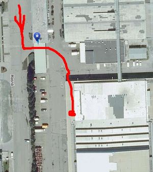

New Space/Masna
Contents
introduction by Pavel Stratil
Hi all! At first, a quick yade-yada introduction about the Vaizard Institute, an organization, which will actually run the place.
- Who are we: A nonprofit organization for everyone with great ideas and the will to realize them. We operate thanks to the efforts of our volunteers, friends and employees who care about their surroundings.
- Description: The Vaizard institute is a non-govermental non-profit organization founded to aid the general development of the society by providing opportunities to those, who want to make the world a better place. The institute supports projects in the fields of sport and health, culture and art, R&D and education, human rights, and sustainable development.
- Mission: We want to change the world for the better, create opportunities for individuals as well as nations and generally do things that make sense. We strive to be recognized for our transparency, awesome projects, innovations and our ability to adapt to whatever the feature holds. We want to inspire others and lead them towards a brighter feature.
- Vision: We dream of a world in which everything serves a purpose. We envision a society that sees things as they truly are, and strives for what is correct in essence. A society that lives in harmony with its environment, able to thrive even under unfavorable circumstances, taking decisions that bring benefit to all.
Basically, we can offer 3 things: 1) place for co-rent We're adapting a 120sqm room with 7m high ceilings into a coworking space with limited access. We'd like it to serve as a meeting place for people to inspire each other in work, what ever it might be. The price can be here ok enough to not impede with how the base is currently run. 2) place for rent What ever you like but for something better then (but rather close to) a commertial rent. To give you an idea, the standard rent in the place is approx. 120 CZK/sqm/month. 3) merge you in - basically, we aimed to create a well equipped hackerspace on our own at some point and atract people to it. So, we could just merge you guys in (though sooner then we expected, so there might be some bumps along the way). On the inside we function in ways similar i.e. linux distros do. We have teams dedicated to certain causes and the top management's role lies mostly in setting long-term goals and coordinating things so that synergies arise, which bring in usefull stuff such as skills, people, or money. You'd became one such team with rights and responibilities carried out by members who are able to and wish to do them and have support of the rest. If this were the case, we'd just aim for keeping a status quo in terms of membership fees, there only might be some projects we'd like you to priorize to help the common good. This possibility would require some time before we get to know you and your needs better and vice versa.
ATM we are using approx. 800sqm in a building with approx 2600sqm. If Vaizard succeeds, then we can freely expand till the wole building is occupied. Expansion's part of our strategic plan for Y2014. Once our intranet is finally up and running, a large part of strategic documents will be avail. to general public w/o any access restrictions.
{kind=link}
To follow up on today's meeting:
- Answers to the questions below have been hopefully answered. If not, feel free to ask me directly.
- Vaizard/Masna is, in base48 terms, a very large hacker space
- We ALWAYS welcome any kind of volunteering, incl. construction work. We also have several hot/dormant/todo projects suitable for the average b48 folk: electronic access system (elmech. locks + rfid reader + membrane keyboard, logging to database, connect to a security/cctv system, i.e. Jablotron), mage (a tool for managing gentoo linux systems - distant similarity to puppet), building a ganeti cluster + sysadmin help on our servers, glued (our intranet/cms/crm solution - writing modules, code cleanup, migrate dev. to git, documentation), logistics (object tagging and tracking), implement encryption w. plausible deniability into btrfs.
- Top-level projects have full Vaizard support but need to deliver (i.e. if the electronic access system were to be developped, it would have to end as the solution we'll use, very well documented, opensourced public project, with a BOM, howto, the software, etc.). Preferred licensing is BSD/Apache, GPL is too complicated.
Volunteering at Masna
how to get there
GPS coords of the entrance gate:
- 49.1831439N, 16.6265411E
- 49°10'59.318"N, 16°37'35.548"E
Then follow the simple path depicted here:

{kind=link}
old info
Helping with demolition, construction, etc. Everybody's welcome!
- Sat, 4th Aug 2012, from 1200
- Sun, 5th Aug 2012, from 1030
Note that this weekend will be rather disorganized, our suppliers didn't supply stuff on time, so we'll be doing some ad-hoc work. Feel free to contact me for details: Pavel Stratil, tel. +420 776 706 254, pavel at vaizard dot org. Next weekend will be a volunteering weekend as well - times will be specified.
More help wanted
- anybody who can get construction materials really cheap? Anybody with a spare wifi router to donate?
- Or a powersupply for a dlink router (somehow it got lost)
- Anyone to pick up the projects above?
our visits of the place
#2 (future)
- new
- merlyn
- b42
- bistro/arius
- evilissimo
- rmarko
- trendy
- recurring
- martian742
- hyna
- (xanthix)
- hexo
Topics to solve
- how much to pay monthly?
- how much we want/allow
- members * average membership fee (that's our limit) - (??)% of the monthly budget will we sacrifice?
- shall we later increase the fees - after settling in the new space? 300/500(600)?
- what's included in the rent?
- electricity
- water
- the cleaning (WC), etc..
- we don't want to automatically become members of Vaizard
- length of the cancellation notice / contract / assurance
- entrance door for our room, passing the gym?
ADDED
- do we get a kitchen where we could cook our own stuff? (evilissimo)
- hackerspace shared by two+ organizations
- can Base48 provide the system for keeping track of objects? (martian)
- would we keep our motivational freedom and ability to initiate our own projects? (martian)
- (asking members) would it be enough for us?
#1 (past)
Some members have already been there.
- martian742
- xanthix
- alexej
- hyna
- hexo
- cubz
- b42
- rmarko/sorki
- evilissimo
- arius
- trendy
Members who not have been there
- merlyn
- Anoq
Crowdsourced info
Let's construct a list of facts about the space. Similarly to our last VH, let's circle a token around.
who's editing
- --Martian742 15:07, 27 July 2012 (CEST) (done)
- next to edit: User:Evilissimo (has notes on paper from the last visit)
- anyone who Evilissimo will want to be the next editor
raw data
- available from: September, but possible to help them before the opening
- contact person (Masna): Pavel Stratil (Vaizard), Cubz and Martian have e-mailed him before
- address: Masna 27/9
- coords:
- fee: flexible
- area: room = 120m2, eventually shared with others
- heating: electric, expensive for now, ~40k CZK for every month the heating is ON
Opinions
pros
- we can grow there, mainly gaining more space and attracting new members --Martian742 15:07, 27 July 2012 (CEST)